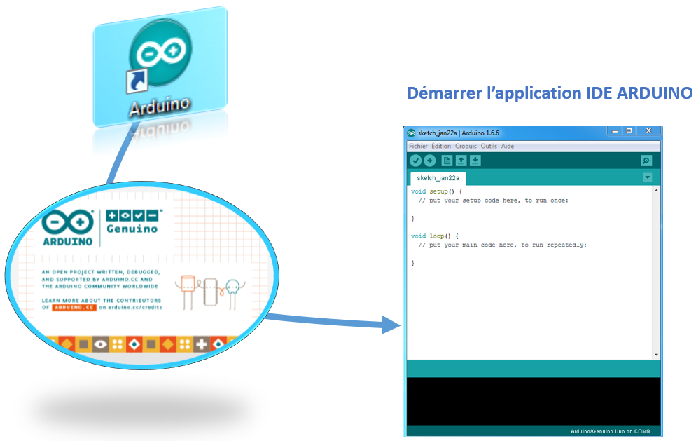

Dans le domaine expérimental, il est parfois nécessaire de créer sa propre chaine de mesure sur des appareils dédiés. Les plateformes micro programmables permettent de développer des chaines de mesure dédiées et parfaitement adaptées aux études de cas. Il est donc impératif d’appréhender le langage utilisé par ces matériels et les procédures d’utilisation.
L'IDE ARDUINO permet d'écrire le programme (type langage C) issu de l'algorigramme de fonctionnement désiré. Un compilateur, transparent pour l'utilisateur, traduit ce programme en langage machine (Assembleur, suite de 1 et de 0) avant de le transmettre au microcontroleur lors de l'opération de "téléversement".
Retour en haut de la pageLe modèle UNO de la société ARDUINO est une carte électronique dont le coeur est unmicrocontrôleur ATMEL de référence ATMega328. L'ATMega328 est un microcontrôleur 8bits de la famille AVR dont la programmation peut être réalisée en langage C/C++. L'intérêt principal des cartes ARDUINO (d'autres modèles existent : Mega, Nano...) est leur facilité de mise en oeuvre. Un environnement de développement (IDE), s'appuyant sur des outils open-source, est fourni. En outre, charger le programme compilé dans la mémoire du microcontrôleur se fait très simplement (via par port USB) dans cet IDE.

La première étape est d'élaborer l'algorigramme de fonctionnement. Ensuite, il est nécessaire de posséder (au moins comprendre) le langage utilisé par ARDUINO (C++). Les éléments qui vous sont fournis doivent vous permettre de comprendre certaines structures et synthaxes utilisées pour programmer.
Retour en haut de la pageL'IDE, interface informatique vous permettant de programmer, est l'outil proposé par ARDUINO pour accélérer votre apprentissage, C'est une IHM. Il existe aussi ARDUBLOCK qui est un outil graphique de programmation.

Retour en haut de la pageDans "structure d'un programme", nous avons vu comment structurer le programme [Code]. La syntaxe du langage de programmation est l’ensemble des règles d’écriture liées à ce langage. La structure minimum est :
Le conseil : Il est judicieux de définir les variables au tout début de votre programme, avant la fonction setup ().